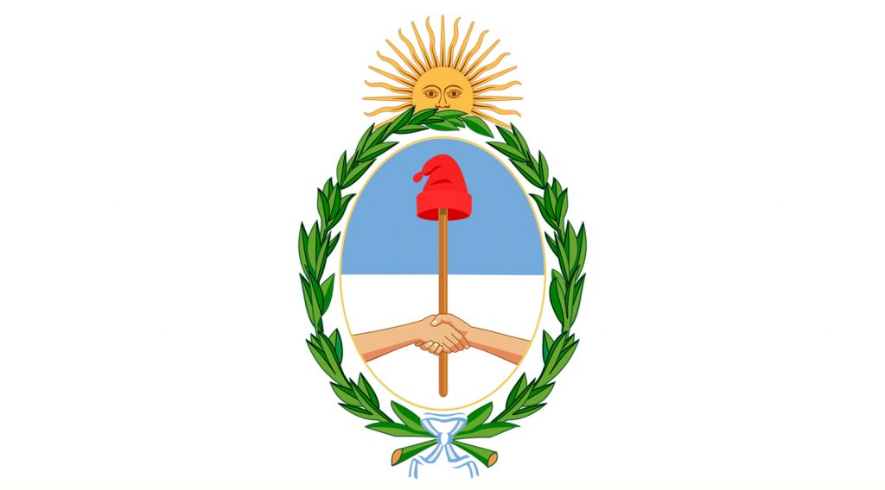

CONOCIENDO ARGENTINA
Bandera

Escudo
Himno Nacional
Nuestro nombre recuerda un pasado colonial asociado a la extracción de riquezas (del latín argentum: plata), en cuyo territorio se asentaban numerosos pueblos originarios de formas de organización política y prácticas de subsistencia diversas.
Nuestro país se caracteriza por poseer una de las mayores superficies de la Tierra, ocupando el octavo lugar a nivel mundial.